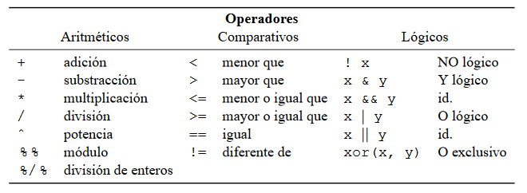
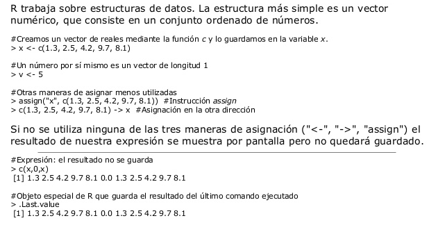

Tarea 7
Lenguaje R
SÍMBOLOS
SINTAXIS
La sintaxis en R es muy similar a la de otros lenguajes de programación como JAVA o C . Las normas básicas que definen la sintaxis de R son:
- No se tienen en cuenta los espacios en blancos: podemos o no dejar espacios para que el código se puede ordenar de forma adecuada y poder entenderse.
- Se distinguen las mayúsculas y minúsculas: para variables en el código, podemos crear diferentes variables con nombres iguales pero alternando mayúsculas y minúsculas.
- Se pueden incluir comentarios: como vimos anteriormente los comentarios se utilizan para añadir información en el código.
- No es necesario terminar cada sentencia con el carácter de punto y coma (;): en la mayoría de lenguajes de programación, es obligatorio terminar cada sentencia con este carácter. En en cambio R podemos o no terminar de esta forma.
- Lenguaje orientado a objetos: todo en R son objetos, las variables, datos, funciones y resultados, que se generan en R son objetos estos se modifican o manipulan con operadores o funciones (que a su vez son objetos).
R se divide en cinco clases básicas o atómicas, estas son bloques de construcción o elementos que conforman a los objetos, son 5 clases principales: numérica o doble, entero, complejo, lógico y de carácter.
ESQUELETO DE LOS PROGRAMAS
APLICACIÓN A DESCARGAR PARA EDITAR Y EJECUTAR
- RStudio
- Visual Studio Code
- Atom
A QUE TIPO DE PARADIGMA PERTENECE
MULTIPARADIGMA
- Funcional
- Vectorial
- Imperativo
- Procedural
- Orientado a objetos
EJECUCIÓN DE UN PROGRAMA
En R es posible definir funciones con un número variable de argumentos. Para ello, la sintaxis es:
f = function(x, ...) { cuerpo de la función }
f = function(...,x) { cuerpo de la función }
En el primer caso, la función podría llamarse sin hacer referencia explícita a x (por ejemplo f(2) ).
En el segundo caso deberíamos especificar f(x=2), dado que el sistema, al encontrar primero los
argumentos variables, no podría saber si nos estamos refiriendo a x o a uno de los argumentos
variables.
Vamos a poner un ejemplo en dos fases. En primer lugar, para entender como funciona al tema,
definiremos una función que simplemente devuelve sus argumentos:
> f = function(...){ L <- list(...) ; return(L)}
> f(1,2,3)
[[1]]
[1] 1
[[2]]
[1] 2
[[3]]
[1] 3
> f(c(1,2),c(3,4,5))
[[1]]
[1] 1 2
[[2]]
[1] 3 4 5
Así pues, es variable el número de argumentos, tanto como el número de elementos de cada uno.
Vamos a aprovechar esta facilidad para definir una función que devuelva algunas medidas resumen
de las distribuciones que se le pasen como argumento. La entrada a la función será una serie de
conjuntos de datos, y la salida la media, varianza, mínimo y máximo de cada uno de los conjuntos.
f = function(...)
{
datos = list(...)
medias = lapply(datos,mean) # lapply aplica una función sobre una lista
varianzas = lapply(datos,var)
maximos = lapply(datos,max)
minimos = lapply(datos,min)
for(i in 1:length(datos))
{
cat("Distribución ",i,": \n") # La función cat es para visualizar cosas
cat("media: ",medias[[i]],"varianza: ",varianzas[[i]],"maximo:
",maximos[[i]],"minimo: ",minimos[[i]],"\n")
cat("------------------------------------------------\n")
}
}
Veamos un ejemplo sencillo:
> f(c(1,2),c(1,3,5,7),c(-1,2,-5,6,9))
Distribución 1 :
media: 1.5 varianza: 0.5 maximo: 2 minimo: 1
------------------------------------------------
Distribución 2 :
media: 4 varianza: 6.666667 maximo: 7 minimo: 1
------------------------------------------------
Distribución 3 :
media: 2.2 varianza: 30.7 maximo: 9 minimo: -5
------------------------------------------------
O también:
> x = rnorm(100)
> y = runif(50)
> f(x,y)
Distribución 1 :
media: 0.1616148 varianza: 0.87319 maximo: 2.201592 minimo: -2.143932
------------------------------------------------
Distribución 2 :
media: 0.4985783 varianza: 0.08253697 maximo: 0.9881924 minimo:
0.01329678
------------------------------------------------